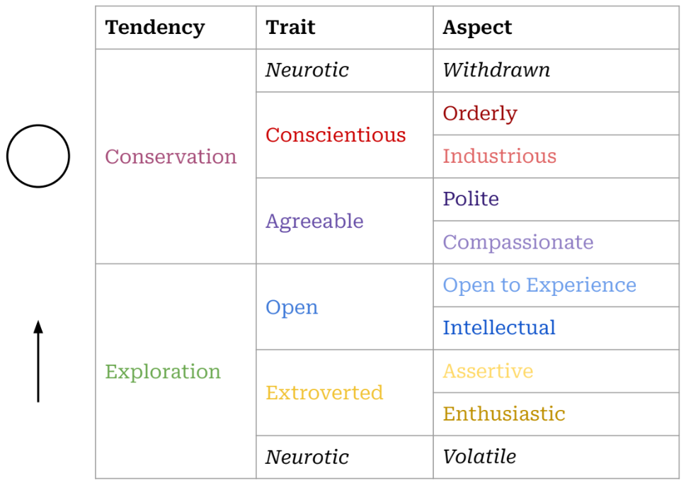

Who am I?
A Little World in Motion
Though there is one reality, we each walk around in our ‘own worlds.’ “I am a little world made cunningly / Of elements and an angelic sprite” writes John Donne,2 gesturing toward our smallness and our vastness, our physicality and what is intangible in us. Even that intangible part of us seems to be composed of reflections: we are mirrors of the world.3
Many great traditions have addressed this question. Our daily round, circulating between inner and outer worlds, is a dance that has been depicted by philosophies and religions across cultures and ages: Atman and Brahman4, the knower and the known, I and Thou,5 the individual soul and the Empyrean6.
Our worlds arise from our bodies. In A Foray into the Worlds of Animals and Humans, Jakob von Uexküll7 describes how the subjective world of any organism emerges from the perceptions and actions enabled by its body. He names this subjective world an Umwelt, or surroundworld.
Rather than describe the idea using a creature as baffling as a human, he provides a sketch using one of our familiar companions: the tick.8 Eyeless, the pregnant tick follows a sensitivity to light in her skin and climbs to the tip of a branch. Time slows and halts, moments, years… until the odor of butyric acid wafts up from the skin glands of some passing mammal, and signals the tick to leap. If she falls onto something cold, her sense of temperature tells her to climb back up. If she falls on a warm body, the tick uses her sense of touch to find a hair-free spot to bore her head into the flesh. After gorging on blood, she falls to the ground, lays her eggs, and dies. Reality is infinitely vast, but the tick’s subjective world has three beacons directing it: light-sense, butyric acid, warmth. And each of these senses is tied to an action: light-sense…climb, butyric acid…jump, warmth…burrow.
Though humans are vastly more complex than ticks, our subjective worlds are still a far cry from the complexity of reality. A simplified picture shows how our simplified realities work in action:

Each person unites the inner and outer world. The Umwelt model explains a lot, and simply. It pares down the bewildering array of experience into two realms: inside of me, and outside of me. In it, all experiences are shown as pathways between the inner world and outer reality: the narrow routes by which we sense the outer world (coming in), and by which we affect it (going out). This loop describes all our relationships with others: we listen and speak, we take and give.
We grow in place, within limits. Staggering as our experiences are, they move through us along this simple path. The path is not a closed circle, endlessly playing the same loop over and over again: it’s more like a spiral. The world changes and calls me to change. Sunsets may be the same as when I was a kid, but I sense them differently. I change myself, and even the ungovernable world, a little bit at a time.
We can grow into beauty, or diminish. The spiral is an elegant fusion of circle and line, repetition and transformation. And I can change for better or for worse; we acknowledge this when we talk about a vicious cycle (or its more recent sibling, the virtuous cycle).9 A spiral is vicious when it seals me into an inner world, antagonistic to others. It is virtuous when it beckons me out to gather, learn from, and share with others.
I have a choice of how I grow. The world rushes in and I have a choice, moment-by-moment, day-after-day. The process is difficult, and sometimes tedious, but it has real implications. And if a little change is possible each time I move through this cycle, then a question presents itself: what is the shape I want to make?
Same Differences
No one else has the same story as me. Down to the spelling of my genetic code, I’m unique. But others’ stories resonate with me. Even my body is written with the same language as yours: we’re the same.
The collection of traits that my family, friends and colleagues recognize as ‘me’ describes patterns of interactions they’ve had with me. Those patterns are the various ways that I interact with the world, my own specific remix of the kinds of interactions that others have with the world.
I’ll use examples from my life since I have them at hand, not because they’re particularly laudable or exemplary. It comforts me to know that I’m only one slice from the broad spectrum of personhood.10
We engage the world through patterns of action, called traits. Over time, people have classified the ways in which humans interact with the world, from the ancient models of the four humors11 or the triguna12 to modern neuropsychology. One of the more recent versions of this effort has resulted in trait models of personality.13 Beginning with the available stock of phrases available in our speech and writing, researchers have investigated whether the various descriptions we apply to each other can be distilled to a handful of common traits transcending cultures and languages. This way, descriptions such as “she is dutiful” and “she is diligent” and “she is detail-oriented” might all be seen as pointing to an underlying character trait of “conscientiousness.” A trait is a repeated pattern which reveals how you interpret the flow of sensations and react to them. For example, if you typically react to the flow of sensations from a crowded party with enthusiasm, you’re displaying a trait we call extroversion. If you shy away from asserting yourself at the party, you’re exhibiting the flip side of that trait (i.e. introversion). The table below gives a simplified take on how these two sides of a single trait would navigate the same scenario (i.e. a party):
| Introverted | Extroverted | |
|---|---|---|
| Sensing | “It’s so loud” | “Great music. Who’s here?” |
| Choosing | “How long do I need to stay?” | “Who should I talk to first?” |
| Effecting | “I’m taking off” | “Hey there!” |
Shyness was a gravity that formed me as I grew up. The exuberant confidence I seemed to observe among my peers had no echo in me. So I had a couple options: either I could linger on the periphery of the social sphere, hoping to be let in by a compassionate insider, or I could go off and develop my own worlds in private.
I did both. My heart vacillated, yearning to be accepted by others and fascinated with the creative discovery which solitude allowed. Will the next kid run headlong at my link in the Red Rover chain to signal me out as weak? Will the batter smack the ball out here to left field and catch me daydreaming? I made a few deep connections and hoped that these connections would keep me in the tribal alliances of children. Was I invited to the sleepover just because Jonathan’s mom felt bad for me? I wanted to be surrounded by people, but invisible.
For all our differences, our personalities align across a few traits. No matter how lost I believed I was in my feelings, there were others who felt the same way. Even in my own school, there were kindred personalities. It’s an acrid, humorous irony: so many lonely people within arms’ reach of one another. With so much in common, and so much to discover.
Generations of researchers have located five or maybe six basic traits which explain the incredible variety of personalities that we encounter in others.14 While their names overly simplify their contents, these are the labels most often used to describe the traits:
- Openness to Experience includes intellect, imagination, creativity, perceptiveness
- Conscientiousness includes orderliness, consistency, reliability, industriousness
- Extroversion includes sociability, lack of restraint, assertiveness, adventurousness
- Agreeableness includes warmth, affection, gentleness, generosity, modesty, humility
- Negative Emotionality (a.k.a. Neuroticism) includes anxiety, hostility, depression, insecurity, impulsiveness
Since people are intricate, we each layer these traits to produce different resonances. Even more, these layered traits interact with different environments in different ways, leading to a nearly infinite flowering of distinct persons. Each person is unique, yes, but our differences can be plotted along these same few traits, just as the plenitude of giraffes, tsunamis, books, and radiolarians all live within four observable dimensions of time and space.
Complicating my own tilt toward introversion is the trait of agreeableness. While extroversion has to do with how one draws energy, this trait describes how we engage with others: whether I am cooperative, polite, trusting, kind, affectionate, empathetic. Growing up, much of the social sphere struck me as artificial, and when others were unkind to me, I began to resent those arbitrary rules and find them oppressive. I eschewed the formality of politeness and social norms, but continued to long for compassion. I wanted others to feel my feelings with me, and I found myself attuned to the mildest facial expressions of my peers. Maybe it started as a way to check others’ approval of me, but what I saw in the curl of their lips and the creases of their eyes were deep, internal worlds: pain and hope like my own. This compassion also rooted my nervous system to the mantras I grew up with in Christianity. “Do unto others” didn’t seem like a social norm but a revelation, more like the law of gravity.
Awkward in the spotlight of others’ attention, when I feel empathy it can be tempting to distance myself or fabricate a false harmony before issues are truly resolved. Hardwired to the facial expressions of others, I often rush to resolve that pain. Knowing this weakness in myself, I have belatedly come to value the politeness which annoyed me when I was younger, to see structures and mores as a collective platform for compassion, delaying enemies’ momentary wincing or roars by bringing them together at the same table.
The interplay between personality traits is a continual balance, often tense. Introversion may want to lean on the strictures of politeness, but compassion tugs me back again and again into the charged arena of relationships. Maybe someday the various urges in me will be aligned, but until then the tension between these traits is a grace, pulling me from stagnation into a virtuous circle. When I’m ‘curved in upon myself’, to use the phrase of St. Augustine, there are many arcs to escape the gravity of this curve: curiosity, social expectations, compassion. I restlessly switch between these orientations until I can latch onto something stable, outside of myself.
Our personalities are rooted in our bodies. Of course, if our descriptions point to something real about us, it would be strange if we couldn’t trace their presence within the fabric of our bodies. Delving deeper, neurological studies15 have discovered relationships between our longstanding descriptions of ourselves, and the material ‘stuff’ which makes us up: the brain and other nerves that weave us together.
The Stoic philosophers16 suggest that we recognize and consciously accept the material design of the cosmos, and the constraints which it places on us.
My personality is rooted in my body, and can’t be untangled. Did my shyness lead me into social situations that produced chemicals similar to those of depression? Or was I born with a body chemistry which predispose me towards being depressed? Where are the edges of my personality?17 Is it in my skin, in my senses, or in the traces I leave by interacting with the world?18
My body moves about and takes the bruises of my habits: eyes wrinkled by concentration, liver fattened by immoderation, legs muscled from exploration. While we might display the personality as a simple five-sided shape, it lives in the curls and winding of our guts, the watery lightning of our brains.
They have a spiral shape. Distilling personality traits even further, we find two basic tendencies: stability and plasticity.19 A motion which holds us together, and a motion that impels us to explore the world. A circle and a line.20

The table above shows how these two tendencies play out across five primary traits of personality, as well as the essential aspects21 which comprise those traits. There are many more descriptions clustered under each of these, but this list gives a sense of the space in which our temperaments situate themselves. This tension is crucial, valuing coherence (in the circle of stability) and also the need for movement (in the line which jolts us toward change).
Of the two personality traits which promote plasticity, extroversion and openness, one is focused on affecting the world and the other is focused on sensing the world. We need these tendencies in order to grow, and we need the other traits to balance that growth. Without that balance, a person would become unstable, glutting themselves on experiences and then seek to influence others to generate new experiences, with no accountability or self-control.
For some people, extroversion is the lever that heaves them out of the rut of stability. I honor this, and frequently wish that I was oriented more towards extroversion. For me, though, change tends to come through the route of openness to experience.
I can feel the tug of plasticity almost tangibly sometimes: headed into depression, midwinter, or even in the middle of a situation. An existential claustrophobia. I am moving around a closed circle, or stuck in the boxes of my calendar appointments. Trapped by the stability produced by conscientiousness, by tacitly agreeing with various social pacts, I long to explore. Sometimes a bit of reading is enough, and sometimes I want to wake up on another side of the planet. These inclinations can lean toward escapism, though my motivation is slightly different: not to escape myself, but to rekindle my sense that each thing is open to possibility.
When I have conscientiously divvied up my days into tasks, the world can come to seem all surface: a series of closed lids and locked doors. If I can find a way to open those doors, mundane objects or activities become suffused with wonder. While it is not quite extroversion, the doors of reality most often open through the form of a living human person who breaks down the walls of my habitual sight.
Reality coaxes us out of ourselves and into relationship, seeking acceptance, meaning, beauty. By reaching out, toward deeper engagement with others, we also reach up, toward greater perspective and wisdom. This spiral motion describes the ascent of kestrels, the growth of seedlings,22 and the progress of apprentices.23
Traits as Tools
It’s important to hold onto these categories lightly. While it is always tempting to see our ideas about reality as reality itself, our ideas are tools: much like telescopes or microscopes. These help us to see at different levels of resolution, and trait models help us to see behavior patterns by zooming out and viewing them in context. But these models must continually be tested in our day to day lives: they are tools. Even the terms used to label traits (Open, Conscientious, Extroverted, Agreeable, Neurotic) are fleeting, though they point to a more durable structure that underlies human persons. The accuracy of a specific word erodes as quickly as language and culture changes,24 and the specific labels used for these traits were plucked from a large array of similar terms.25 For that reason, it is helpful to understand the types of descriptions which underlie these higher level traits. Having a small set of shared terms is helpful to guide our discussion, but I need to remember that “a map is not the territory”26, and that “all models are wrong, [though] some are useful.”27 Reality can’t be reduced to the words and tools we use to approximate it.
I am not reducible to my traits. A downside of thinking about oneself as a bundle of traits is that it gives a false sense that these are fixed: that these traits “identify” me, or “add up to” me, rather than describing patterns of my interactions with the world. We may take some comfort in being part of a group, but this same consolation can make us feel justified in forming sects, dividing us unnecessarily from others. “Extroverts don’t understand us: they’re just wired differently.” Similarly, a trait can easily become an excuse, if we see it as inflexible: “I couldn’t possibly talk to that suffering person, I’m an introvert.” There’s a voice in us that objects to walls being set up arbitrarily,28 a voice that insists “I too am not a bit tamed, I too am untranslatable.”29
Traits are tools for navigating one’s relationship with the world.30 Each trait shapes our sense of the world, and provides us with tools to impact our environment. And we combine each trait with others, to form a comprehensive, complementary approach to the shifting situations we find ourselves in.31
Our tools shape us in return. Sensing the world in a way which is compassionate or curious engraves a particular shape in us.32 That engraved pattern, in turn, disposes us to see the world in certain ways: hopeful, manipulative, compassionate, etc. Once the pattern is engraved, it is self-reinforcing, so we must purposefully guide our traits if we want to change their course.33
One Among Many
But why would I want to change anyway? To find a place among others. Considering the question “who am I?” one hears that same question echoing in each person we encounter, building toward a collective question “Who are we?” Our little diagram above shows us as open-ended. We pour our actions into the world and we do not know how they will return. We are vulnerable to the world and this has led us to run, to seek shelter, and sometimes to venture sacrifices in hopes that the world will return what we pour into it. We are utterly dependent on the world outside of us and on each other.
A complete picture of me includes a picture of those around me. It seems silly just to draw my own traits circling around. They only make sense within the flowing ecosystem of others actions, perceptions and communications. After all, these surroundings formed me in the first place. The “outer world” is comprised of infinite inner worlds: each person in each car, at each subway stop, on each sidewalk; the inner worlds of spiders in a corner, of a mouse within your walls. If we zoom in on the storm of the outer world, it is actually a cloud of inner worlds; a cloud of perspectives that we will never be able to stand within, but which we honor nonetheless. My thoughts must bow to the reality of you, since “the best gesture of my brain is less than / your eyelids’ flutter which says / we are for each other.”34.
We are for each other. As I think of who I am (compared to who I want to be) the domain of the social comes clearly into view. We are a social sort of creature, defining ourselves by our relationships and by where we fall within those relationships. While this may begin out of self-interest,35 relationships require reciprocity. If we are defined by our relationships then we are also undefined by them. That is to say, we can only strengthen our relationships if we erode our boundaries. Think of old lovers who confuse each other’s hands for their own,36 whose perceptions have become mingled because their defenses have been let down. Relationships are our end, in multiple senses: both our goal and our undoing.